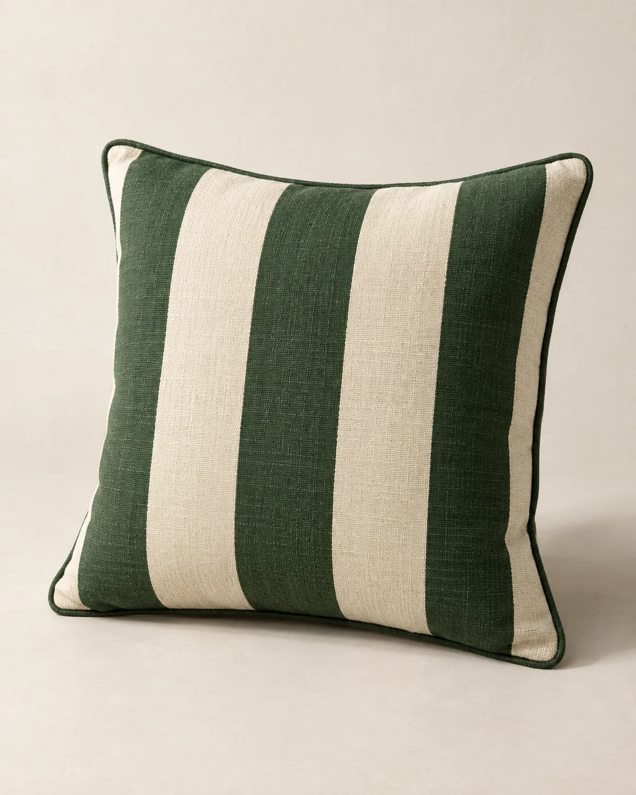
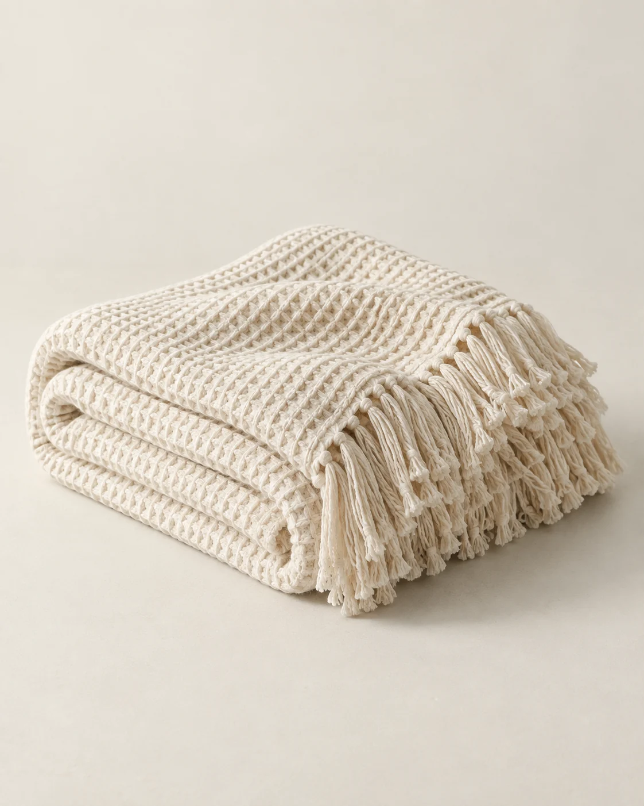

Tierra y textura
Tierra y texturaBruma
$34.900 CLP ref.Macetero de terracota
Conocer BrumaLA COLECCIÓN ESENCIAL / 01 — 06
Un asiento para volver. Una luz para quedarse. Texturas que hacen que afuera también se sienta casa.
Catálogo de inspiración · Venta aún no disponible. Todos los precios son referenciales, en pesos chilenos.
Tierra y texturaMacetero de terracota
Conocer Bruma Para quedarse un rato
Para quedarse un ratoLámpara portátil
Conocer Duna Tu lugar afuera
Tu lugar afueraSillón de roble y cuerda
Conocer Nido Lo justo, a mano
Lo justo, a manoMesa lateral de metal
Conocer Orilla
Un gesto de colorCojín de rayas anchas
Conocer Línea
Cuando baja el solManta de algodón waffle
Conocer NubeANTES DE ELEGIR, IMAGINA
Empieza por una costumbre. Dale espacio a lo que disfrutas.
Una idea para tu balcón